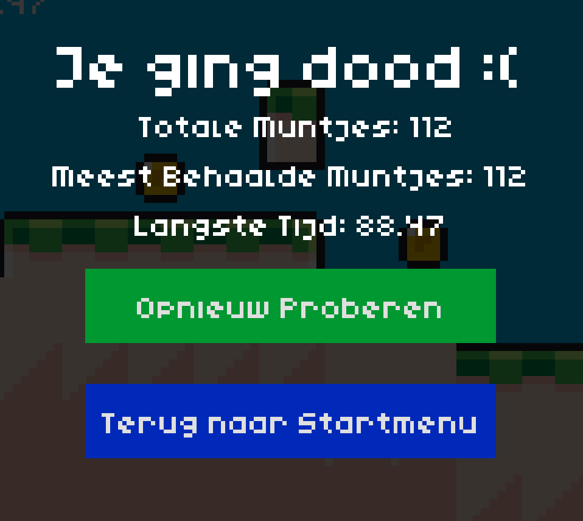
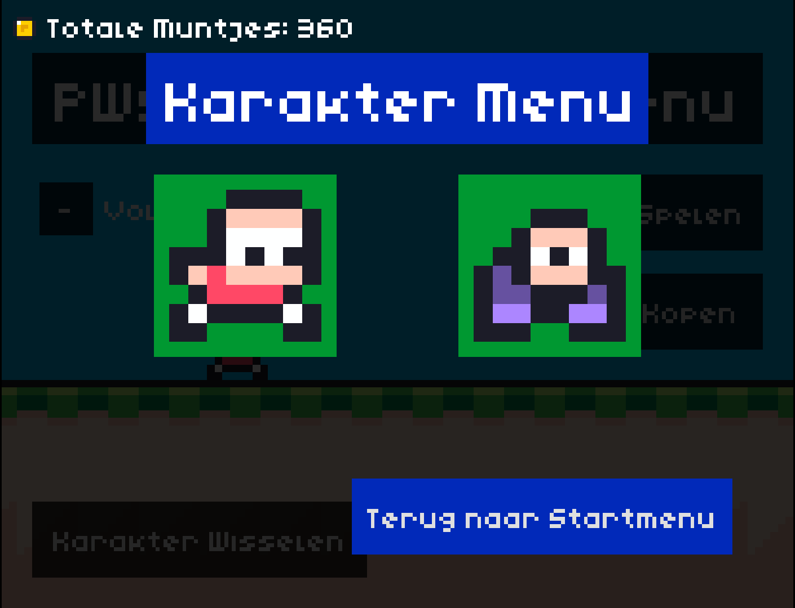
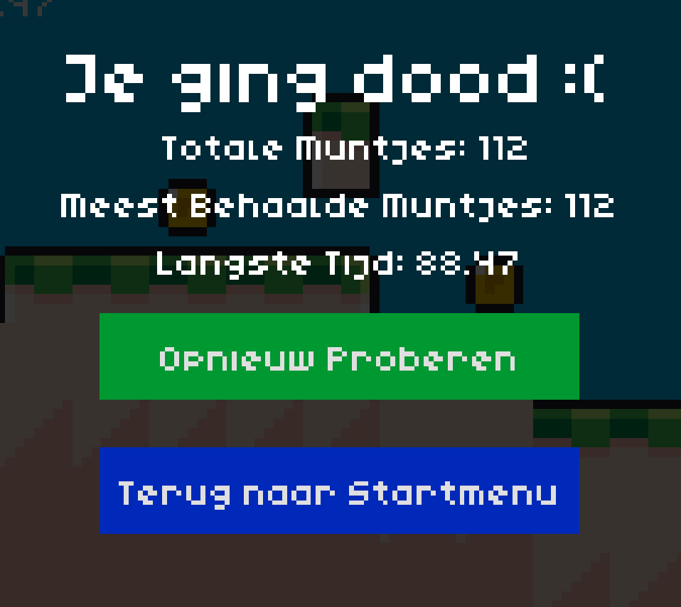
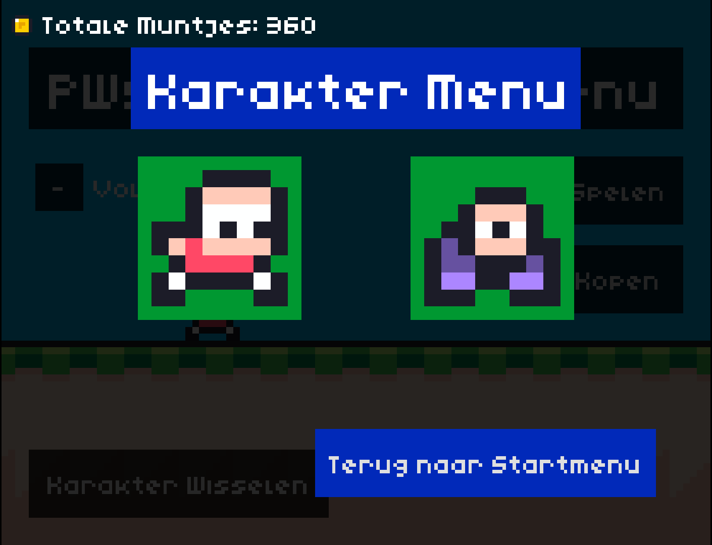
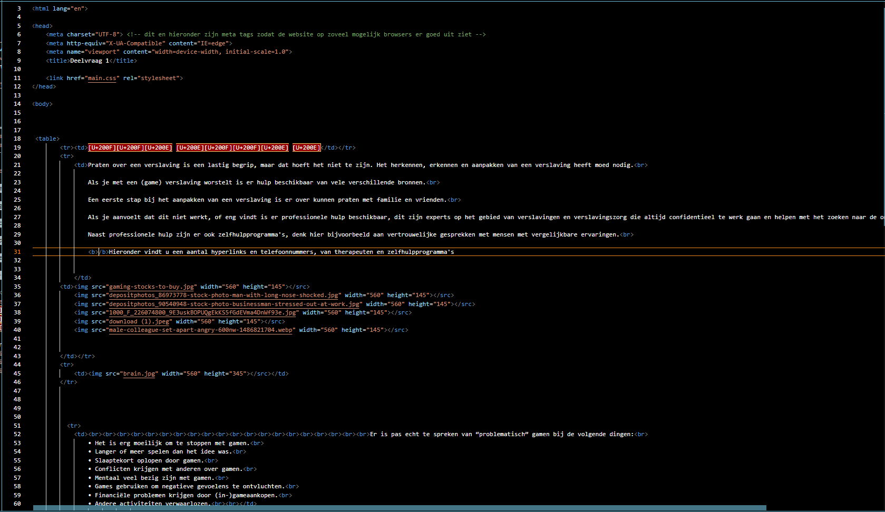
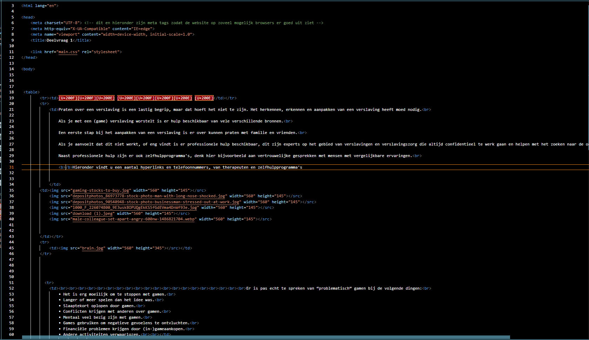

Of dat je er zo veel mee bezig was dat je vergat waar je was?
Er is een kans dat je dan beginnend verslaafd bent, maar hoe makkelijk gaat dat?
Zou er een verschil kunnen zitten tussen de verslavingsgevoeligheid van mannen en vrouwen?
Hoe zit het met verschillende leerniveaus?
Dat hebben wij in dit onderzoek onderzocht.
Hoe wij dit onderzoek hebben aangepakt lees je hieronder.
Onderzoeksvraag
Onze onderzoeksvraag is:
Zit er een verschil in verslavingsgevoeligheid tussen de derde klas HAVO en de derde klas VWO op het Zaanlands Lyceum?
Onderzoeksmethode
Voor het onderzoek hebben we zelf een spel ontwikkeld (zie deelvraag 6 voor de uitleg van de game).
Om te onderzoeken of er een verschil zit in verslavingsgevoeligheid tussen een derde klas HAVO en een derde klas VWO op het Zaanlands Lyceum.
We hadden met een mentor van een derde klas HAVO en een mentor van een derde klas VWO afgesproken dat we hun hun mentoruren over mochten nemen om ons onderzoek uit te voeren.
Om dit te onderzoeken hebben we 2 enquêtes gemaakt.
Een eerste korte enquête met vragen over hoe lang de leerling dacht dat ze bezig zouden zijn met het spelen van het spel.
De tweede enquête zou na het spelen van het spel worden ingevuld en zou vragen stellen over of de leerling langer bezig was dan ze hadden verwacht.
Werkwijze
We hebben bij beide klassen dezelfde les gegeven. We begonnen met een korte introductie waarin we niet vermelden dat we gameverslaving onderzoeken, daarna lieten we de leerlingen de eerste korte enquête in vullen.
We lieten de leerlingen na het invullen van de enquête het spel spelen.
Naast het einde van het lesuur was er geen limiet op hoe lang de leerlingen mochten spelen.
Wanneer een leerling het gevoel kreeg dat ze genoeg hadden gespeeld of als een leerling geen zin meer had in het spelen van het spel, mochten ze stoppen.
Na het spelen van het spel lieten we de leerlingen de tweede enquête invullen.
Aan het einde van het mentoruur mochten de leerlingen weg.
We lieten ze niet eerder weg als ze vroeg stopte met het spelen van het spel.
 



Wij verwachtten dat er een verschil zou zitten tussen de verslavingsgevoeligheid van een derde klas HAVO en een derde klas VWO.
Wij verwachtten dat de derde klas HAVO verslavingsgevoeliger zou zijn dan de derde klas VWO.
Resultaten
Hier staat een vergelijking tussen de enquêteresultaten tussen de derde klas HAVO en de derde klas VWO.
Bij de VWO-klas had 91% van de leerlingen langer gespeeld dan dat ze van tevoren hadden verwacht.
Bij de HAVO-klas ligt dit percentage veel lager dan bij VWO, namelijk op 58%.
Dit geeft aan dat de onderzochte HAVO leerlingen van tevoren een betere inschatting konden maken dan de onderzochte VWO leerlingen over hoe lang ze denken bezig te gaan zijn met een game.
We zagen in de HAVO-klas relatief veel leerlingen die gefrustreerd raakten met het spel en er kort daarna mee stopte en een ander spel gingen spelen.
Bij de VWO-klas was dit totaal niet het geval.
In de VWO-klas wou bijna iedereen de high score verbreken.
En zoals te zien (waar? Welke resultaten? Dit moet er nog bij) in de grafiek(?) Dit stukje tekst is nog niet volledig/compleet heeft bijna iedereen bij VWO het spel gespeeld totdat ze bij de maximale speeltijd waren, op een enkeling na.
n de VWO-klas vonden veel leerlingen het spel leuker dan verwacht en kregen we reacties als:
“Ik wou het graag blijven spelen” of “het spel was perfect”.
In de HAVO-klas waren de reacties over het algemeen wat neutraler, sommige vonden het een leuk spel terwijl andere het totaal niet leuk vonden met reacties als:
”Ik word al snel boos wanneer ik het spel speel” of “Het was wel leuk maar het was ook te makkelijk”.
De meest voorkomende redenen voor het langer spelen dan verwacht was bij beide klassen, HAVO en VWO, het behalen van een hogere high-score en dat het leuker was dan van tevoren verwacht.
In de HAVO-klas waren er van de 18 leerlingen 7 ouder dan 14, dat is 38%
In de VWO-klas waren er van de 23 leerlingen 3 ouder dan 14, dat is 13%
Dit kan natuurlijk ook invloed hebben op je gamegedrag en om hoe je omgaat met de tijd. Als je jonger bent heb je misschien minder snel door hoe snel de tijd voorbijgaat.
Conclusie
Onze hypothese was dat de derde klas HAVO leerlingen verslavingsgevoeliger zouden zijn dan de derde klas VWO leerlingen.
Maar aan de hand van de resultaten is af te leiden dat dit dit stukje moet ook nog uitgebreid worden, dit wil ik (mike) best doen nadat alle resultaten verwerkt zijn
Discussie
Er is nog geen discussie
 
